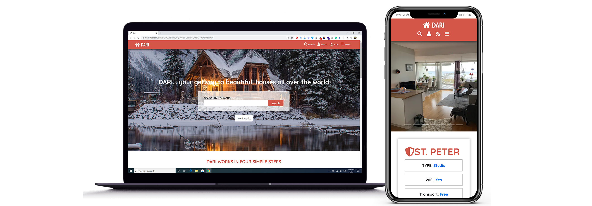

Academia

Academia is a social media website, that was built specifically for schools, to allow students to communicate internally and share their thoughts and questions on the platform.
Most Stared Github Repos

As the name implies, this project allows users to fetch the most starred GitHub repositories created in the last 30 days.
BookClone

BookClone is a social media website where people can share their pictures, write about stuff, comment on other user's posts, and also chat with other people.
Dari
Dari is a website that allows users to look for apartments and houses from all over the world. you can search for houses and read details about them so you can decide if you want to rent one later on.
Github Profile Finder

Github Profile Finder is a website where you can search for GitHub profiles by typing their name in the search input on the top.
NewsWeek

Newsweek is a replica of the famous news website. It was built using Bootstrap and HTML/CSS.
Articles
What really is a CSS Grid System? And how to work with it?Medium.com